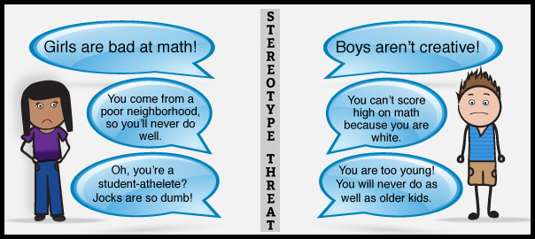

by Lawrence Yu
Posted on February 21, 2015
What is stereotype threat? In 1995, Steele and Aronson conducted several experiments that showed Black college students performed subpar compared to White students on tests when race was emphasized. When race was not emphasized however, Black students were able to achieve similar scores to White counterparts students. According to Steele and Aronson, “Stereotype threat refers to being at risk of confirming, as self-characteristic, a negative stereotype about one's group” (Steele & Aronson, 1995). Other examples of stereotype threats include:
As an Asian American, I have yet to feel like I’ve been impacted by stereotype threats. I would imagine it to be pretty difficult for someone who’s affected by stereotype threats to perform to the best of their abilities since they are pressured to do well to prove to everyone otherwise of their stereotypes. That pressure would surely cloud one’s judgment and slows their thinking. This topic is pretty hard for me to relate so I’m not sure what else I can say about even after reading and watching videos about stereotype threats. Some things I could try to help others that suffer from stereotype threats would be avoiding bringing up any sort of group stereotypes in the first place.